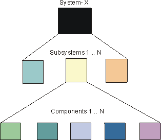

| Concept: Product Directory Structure |
 |
|
| Related Elements |
|---|
|
The Product Directory Structure serves as a logically nested placeholder for all versionable product-related work products. Work products are produced as result of the following development process lifecycle and for the development of each constituent implementation element of the overall system. The following figure shows that System-X consists of "N" subsystems and each subsystem consists of "N" components. The Product Directory Structure provides a common placeholder for the various work products that are required for the development of each part of the overall system.  System Product Directory StructureAlthough an experienced software architect may have a good idea of system composition at the outset, the view of major developmental components emerges as a result of Analysis & Design-related activities to define and refine candidate architectures. The following table provides a Product System Directory Structure pattern that could be used as a "Product Directory Structure" in the initial phases of project development whereas the precise details of composite subsystems and architectural layering has yet to be determined.
Once Analysis & Design activities are underway, and there is an improved understanding about the number and nature of subsystems required in the overall system, the Product Directory Structure needs to be expanded to accommodate each subsystem. The information in the System Product Directory Structure needs to be visible to all subsystems across the project. So apart from the product management, requirements and test information Standards and Guidelines would belong in the System Product Directory Structure. In this instance, Tools are included in the System Product Directory Structure, however, they could be in a higher level directory where a number of Systems could be using the same toolset. Subsystem Directory StructureThe information in the Product Subsystem Directory Structure relates directly to the development of that particular subsystem. The number of 'instantiations' of the Subsystems Product Directory Structure is clearly related to number of subsystems decided upon as a result of the Analysis & Design activities. For instance, System-y may have three subsystems (Subsystem-A, Subsystem-B and Subsystem-N). Each subsystem has the necessary information for its design and, eventual, implementation. A generalized breakdown of the Subsystem Product Directory Structure is as follows:
Component Directory StructureThe number of components is a result of subsystem design decisions. One benefit of nesting directories in the prescribed manner is that all relevant contextual information on the development of a component is available, either at the same level, or the level above.
This type of logical nesting gives rise to the setting up of development and integration Workspaces that can linked to
the overall development structure. |
| © Copyright IBM Corp. 1987, 2012 All Rights Reserved Property of IBM These materials are intended only for use as part of an IBM engagement |